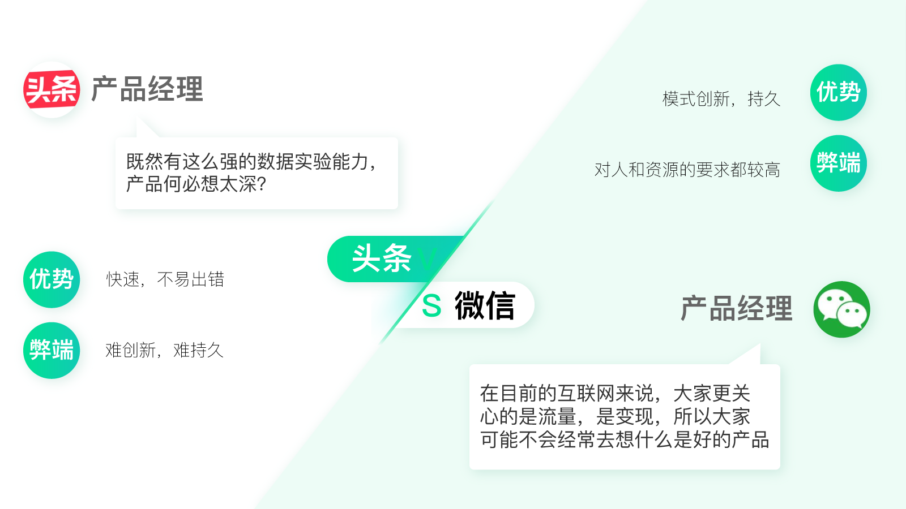

- 00 开篇词 人人都是增长官.md.html
- 01 预习 增长小白如何“弯道超车”？.md.html
- 02 预习 如何理解“增长”？.md.html
- 03 预习 不同职能如何做好增长？.md.html
- 04 预习 做增长如何处理职能间的矛盾？.md.html
- 05 正确目标找不对，天天加班也枉然.md.html
- 06 活学活用北极星指标.md.html
- 07 OKR如何助力增长？.md.html
- 08 不懂用户调研？那就对了！.md.html
- 09 调研目标：在差异性洞察中找到爆破点.md.html
- 10 数据分析：在“花式对比”中发现玄机.md.html
- 11 用户分类：围绕北极星指标细分人群.md.html
- 12 用户访谈：像侦探一样寻找破案线索（上）.md.html
- 13 用户访谈：像侦探一样寻找破案线索（下）.md.html
- 14 提炼用户差异，发现增长契机.md.html
- 15 挖掘产品优势，打破增长瓶颈.md.html
- 16 定位营销差异，抢占用户心智.md.html
- 17 一级方向：找到增长爆破点.md.html
- 18 B端产品如何调研？.md.html
- 19 全局规划增长机会.md.html
- 20 统筹全局的用户增长地图.md.html
- 21 案例解析：定义关键增长指标.md.html
- 22 正负双向洞察，找准切入点.md.html
- 23 二级机会：制定增长策略.md.html
- 24 为一家濒临破产的公司制定增长策略（上）.md.html
- 25 为一家濒临破产的公司制定增长策略（中）.md.html
- 26 为一家濒临破产的公司制定增长策略（下）.md.html
- 27 为什么指标数据怎么优化都不提升？.md.html
- 28 案例解析：打造增长闭环（上）.md.html
- 29 案例解析：打造增长闭环（下）.md.html
- 30 案例解析：唤醒沉睡用户（上）.md.html
- 31 案例解析：唤醒沉睡用户（下）.md.html
- 32 没有分解，就无缘增长.md.html
- 33 四个要点颠覆传统需求文档.md.html
- 34 三级落地：无限场景应用.md.html
- 35 手把手教你设计一次成功的实验（上）.md.html
- 36 手把手教你设计一次成功的实验（下）.md.html
- 37 积少可成多，别针换别墅.md.html
- 38 四级延续：增长组件库案例.md.html
- 39 以用户为中心增长.md.html
- 增长导航图 增长专栏的知识架构是怎样的？.md.html
- 尾声 结束意味着新的开始.md.html
- 预习答疑 你需要一张思维导图吗？.md.html
- 捐赠
02 预习 如何理解“增长”？
你好，我是刘津。
今天我要跟你分享的主题是如何理解“增长”这个概念。
如今“增长”的重要性不言而喻。但究竟什么是“增长”呢？
不同的人站在不同的位置，有着不同的理解。有的人觉得增长是提升KPI，有的人觉得增长是提升市值，有的人觉得增长是用户量增加，有的人觉得增长是专门由增长黑客来负责的……
这些理解都是不全面的，因为增长需要从全局的角度来看，而不是从局部的角度看，那样就变成“盲人摸象”了。
总体来说，“增长”代表的是产品的长期价值，包括用户价值及商业价值，当然两者是相辅相成的。
今天我会从不同的角度帮助你理解到底什么是增长。
增长黑客VS产品极客
近年来增长黑客的概念非常火爆，很多人会自然地将“增长黑客”和“增长”等同起来。
但实际上，“增长黑客”做的只是增长工作的一部分。另一方面，一直秉持“产品至上”“用户至上”的产品极客也一样是在做增长，只是路数不同、思维不同而已。
增长黑客
我这么说“增长黑客”和“产品极客”，你可能会很迷惑，这说的到底是什么？为了解释清楚这两者的差异，就不得不提到这两种理念的代表产品：抖音和微信。
抖音是近年来增长最快、最受欢迎的新产品之一；而深耕多年的微信目前日活已经达到10亿。这两款产品可以说都是把“增长”做到了极致。
抖音是今日头条旗下的产品，在技术风格上与今日头条一脉相承，被归入“头条系”产品。
头条系产品主要使用算法进行新闻及内容的推荐，这种偏向技术与数据的方式正是增长黑客所主张的。
和传统的内容型产品相比，他们不需要过度依赖人工，仅通过用户自发生成的内容成就了自身旗下多款炙手可热的产品。
但是，数据有很大的局限性，它只能验证现有的想法，永远无法探索未知的东西。
你的每一次点击，每一次搜索，经过数据运算构成了你在数据库中的用户形象。增长黑客的方法就是如此：用数据推算出你的用户形象，再根据你的喜好给你推荐类似的内容。
这就像传播学中的“回音壁”效应：基于数据算法的产品就像一个回音壁，你发出声音后，应用反馈给你的是与你自己的声音相似的回音。你认为自己的“声音”得到了“印证”，所以你会对自己“声音”的正确性更加坚定不移。由此，你的信息、知识圈层只会更加固化，视野越发狭窄。
产品极客
和增长黑客相反，产品极客鼓励创新、追求极致。
“微信之父”张小龙说到产品设计原则，他提到的第一条就是：“好的产品是有创意的，它必须是一个创新的东西。”
只不过可能对于目前的互联网来说，大家更关心的是流量，是变现，所以人们可能很久不会去想什么是“好的产品”了。
张小龙的话戳中了很多产品人的痛点，那就是怎么平衡创新和绩效指标。
如果一直盯着KPI，那只能是在原有基础上优化提升，很难彻底创造一个全新的东西出来。而这些年微信一直在不断创新，比如红包、公众号、小程序等等，它们都是围绕微信的价值定位“一个生活方式的工具”创新而来的。

“增长黑客”和“产品极客”的例子可以用一句爱因斯坦说过的话解释：“事情不会在出现问题的那个层面上得到解决，只有上升到更高的层面才会得到解决。”
听起来是不是有点绕？举个通俗的例子吧。
假如你家的羊被狼叼走了一只，你往里面补了一只羊，表面上看这个问题解决了。过些天，又有羊被叼走了，你又得往里不断地补羊。
可是有一天你登高望远，发现原来是羊圈出现了破损，那么你只要把破损的地方补好就可以了。
做实验其实就是“补羊”，一直在出现问题的那个层面上解决问题。
用大海捞针的方式穷举各种可能进行实验，这其实是一种受限于无法利用更高潜能的“笨方法”。如果人自身可以提升视野和维度，去“补羊圈”，问题往往迎刃而解，并不需要无穷次的实验。
听到这里，你是不是产生了“做一名产品极客才是正道”的想法？那你想过为什么“产品极客”之路是一条少有人走的路吗？
实际上，想成为一名真正的产品极客难之又难。
如果你去看乔布斯、雷军、周鸿祎、张小龙等产品大佬们的自传和文章，会发现似乎并没有什么成熟的方法论，靠的是天赋、机遇、敏锐的眼光、多年的实战积累。这让人怎么学习呢？
这也使得增长黑客理念逐渐占了上风，毕竟它更容易落地和学习。所以两者各有千秋，也各有利弊。
当然，为了帮助你理解，我把二者的特征形容得有些极端。毕竟为了自身增长，大家也都在互相学习，头条也做用户研究，微信也做数据验证。
所以下面重点讨论通过这个专栏我要带你学习的方向——如何结合二者的优点做既有创意又有效率的增长。
“以用户为中心增长”才是真正的增长
产品极客关注创新、洞察力、思维、体验、传播等等；增长黑客注重数据驱动及小成本快速实验；两者如能合二为一，这不正是我们上一讲中提到的“最终为用户，简单却有效”吗？
基于这种设想，2018年我们在业内首次提出了“以用户为中心增长”的价值观。
因为只有回归用户价值，才有长期持续增长的可能性；同时配合有效的增长手段，让增长效率大幅提升、事半功倍。
所以，“以用户为中心增长”从来不是把提升关键数据指标当作最重要的事情，而是通过提升用户价值提升商业价值，数据只是衡量的手段和工具而已。
产品极客偏重“道”的层面，而增长黑客偏重“术”的层面。道术结合、双剑合璧，才能做到“以用户为中心增长”，这才是我们真正追求的有意义的增长。
如何“以用户为中心增长”？
“以用户为中心增长”的过程，简单来说就是“以用户为中心，通过差异性洞察找到增长的爆破点”，再配合数据驱动的实验方法，最终达到“持续地以最小成本创造最大价值”的目标。
以用户为中心是基础，真正服务好用户才可能提升企业价值，但这并不完全依赖于专业程度，重点在于有能力挖掘用户的潜在心理和真实需求。
所以现在以及未来，企业需要的不是最“专业”的人才，而是最“懂用户”的人才。上一讲中的几个小例子充分说明了这一点。
作为设计师，你捕捉到了金融产品的用户需要的不是好看的界面，而是正规、可靠的风格，那你设计出来的界面转化就会比别人高；
作为一个手机游戏公司的老板，你捕捉到了用户当前需要的不是炫酷的画面效果，而是简单容易下载的游戏，那么你做出的游戏下载量自然就比同行高很多；
作为一个数据分析师，你发现开某一款品牌的车主在他们那里的留存率特别高，那么你就有可能促成非常有价值的商务合作，继而改变公司未来的走向……
所以我们一方面要以用户为中心，另一方面要找到其中最关键的可以影响到增长的爆破点。这个爆破点取决于“差异性洞察”。只有当你捕捉到了别人没有发现的点，你才可能出奇制胜。
找到“差异性洞察”后，我们还需要通过小成本实验来验证它是否真的能带来增长。如果成功了，那么它就是一个合理的增长爆破点，如果不成功，我们需要继续洞察再实验。
在过往的实践过程中，我发现只要找对方向且方法正确，就真的可以做到“四两拨千斤”，持续地以最小成本创造最大价值；而不必耗费大量的人力成本，最后却无功而返。
在专栏的预习部分结束后，我会分别教你如何做差异性洞察、如何提出假设并寻找相关增长机会、如何落地到具体项目上、如何定期复盘带来持续增长等等。
思考题
结合你自己的工作内容，在绩效和创新之间，你会如何取舍或如何结合？
欢迎你在留言区发表你的想法或者提出自己在工作中遇到的问题，与我和其他同学一起讨论。
如果你觉得有所收获，也欢迎把文章分享给你的朋友。
© 2019 - 2023 Liangliang Lee. Powered by gin and hexo-theme-book.